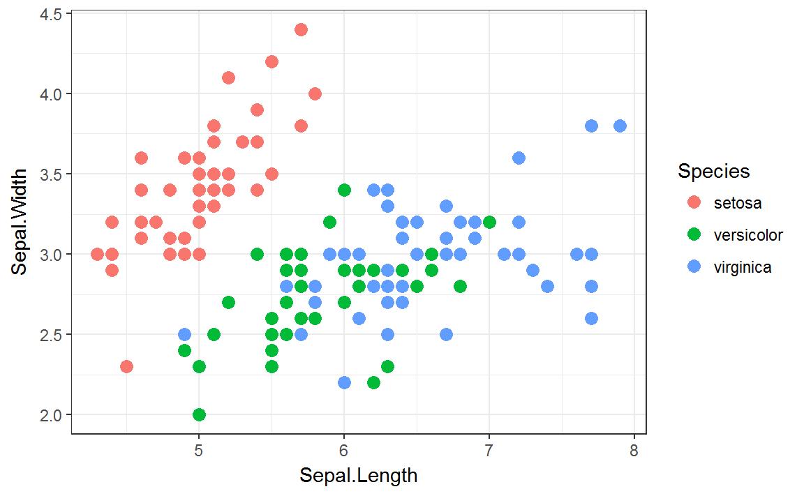
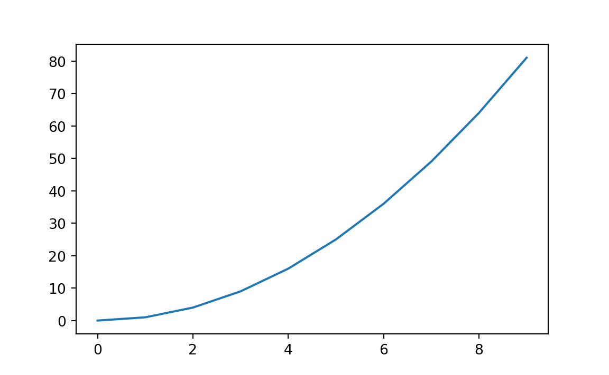

This blog post shows how to use R and Python inside one document and how to easily intermingle code, plain text and graphics and share data between R and Python.
R Markdown is great to make reproducible reports or presentations and allows to intermingle code, plain text and figures. It comes with a wide variety of output formats, e.g. pdf, html, word or latex beamer slides. You can even embed shiny apps in a html report. For example this document was generated with R Markdown.
In the following we will show how to combine R and Python code chunks inside one R Markdown document and how to share data between these chunks. Therefore R Markdown is a great tool for data scientists who wants to make the most out of the tools R and Python offer for data science.
Using R code in R Markdown is easy:
library(ggplot2)
head(iris)
#> Sepal.Length Sepal.Width Petal.Length Petal.Width Species
#> 1 5.1 3.5 1.4 0.2 setosa
#> 2 4.9 3.0 1.4 0.2 setosa
#> 3 4.7 3.2 1.3 0.2 setosa
#> 4 4.6 3.1 1.5 0.2 setosa
#> 5 5.0 3.6 1.4 0.2 setosa
#> 6 5.4 3.9 1.7 0.4 setosa
ggplot(iris, aes(Sepal.Length, Sepal.Width, col = Species)) +
geom_point(size = 3) + theme_bw()
We can also include Python code chunks. We will use knitr::knit_engines$set(python = reticulate::eng_python) in the setup to render the Python code. Make sure to install the newest reticulate package via devtools::install_github("rstudio/reticulate").
import numpy as np
x = np.arange(10)
y = x**2And the objects are still available in the next Python chunk.
print(y)
#> [ 0 1 4 9 16 25 36 49 64 81]We can also include plots.
import matplotlib.pyplot as plt
plt.plot(x, y)
plt.show()